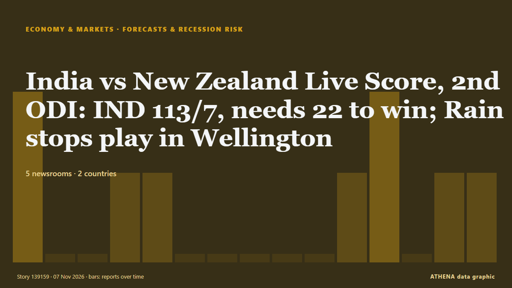

Forecasts & recession risk
SponsoredPresented by  Cybernetics and Artificial Intelligence Lab Welcome to the Cybernetics and Artificial Intelligence Laboratory, established at the Department of Business Administration of the National and Kapodistrian University of Athens. The lab is headed by Professor Dimitrios Thomakos. The lab aims to do research that can be published in top venues. Our research uses tools and methods of Artificial Intelligence, and lies in the following areas: - Forecasting - Decision making - Cyber security - Finance We are always looking forward to collaborating with exceptional students!
Cybernetics and Artificial Intelligence Lab Welcome to the Cybernetics and Artificial Intelligence Laboratory, established at the Department of Business Administration of the National and Kapodistrian University of Athens. The lab is headed by Professor Dimitrios Thomakos. The lab aims to do research that can be published in top venues. Our research uses tools and methods of Artificial Intelligence, and lies in the following areas: - Forecasting - Decision making - Cyber security - Finance We are always looking forward to collaborating with exceptional students!
| 25 Oct | 0 |
|---|---|
| 26 Oct | 0 |
| 27 Oct | 0 |
| 28 Oct | 0 |
| 29 Oct | 0 |
| 30 Oct | 0 |
| 31 Oct | 0 |
| 1 Nov | 1 |
| 2 Nov | 1 |
| 3 Nov | 0 |
| 4 Nov | 3 |
| 5 Nov | 1 |
| 6 Nov | 2 |
| 7 Nov | 0 |

India vs New Zealand Live Score, 2nd ODI: IND 113/7, needs 22 to win; Rain stops play in Wellington
NZ vs IND: Follow live score and updates from the India vs New Zealand 2nd ODI being played at the Hnry Stadium in Wellington. from Sportstar
Block Inc. shares rise 6% after-hours as it raises full-year profit forecast
Block raised its full-year gross profit forecast to $12.63 billion, which would represent a 22% year-on-year growth. from The Block
ONE doubles full-year profit forecast on higher freight rates, volumes
The carrier said although spot rates are expected to ease in the coming months due to the seasonal softening of cargo demand, they will remain above the levels assumed in its previous forecast… from The Journal of Commerce (JOC)